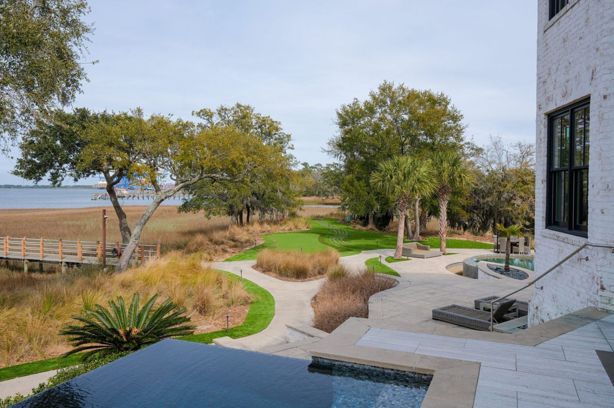
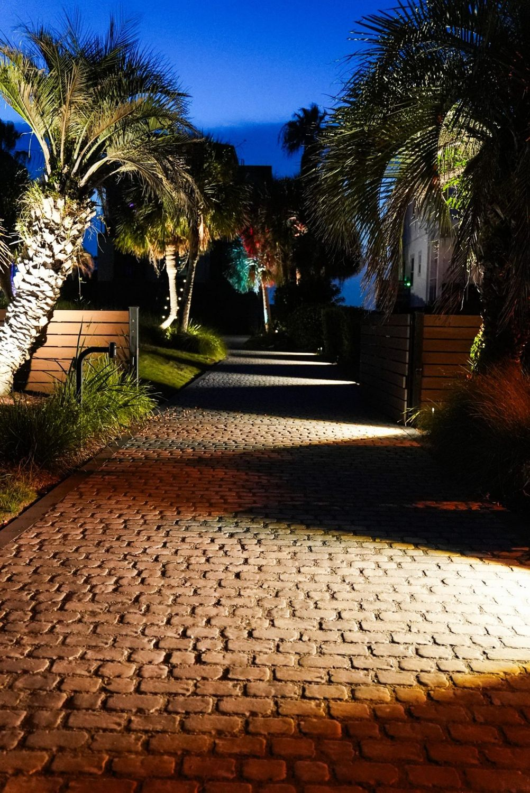
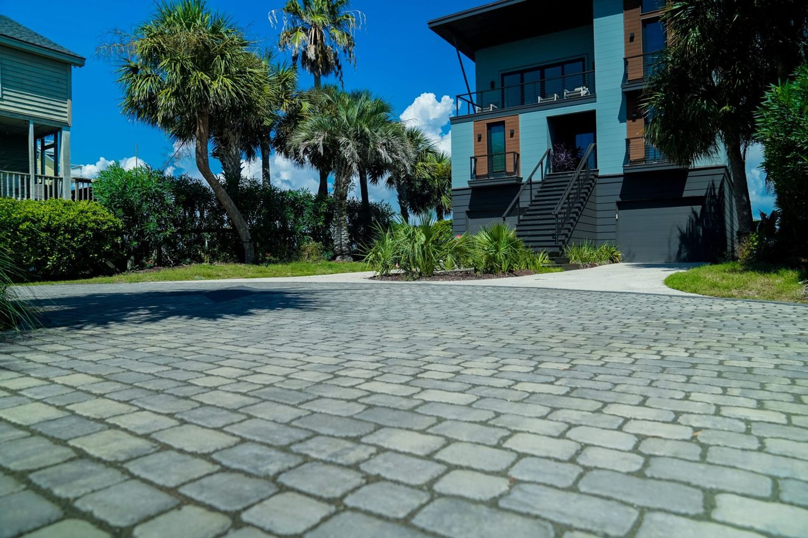
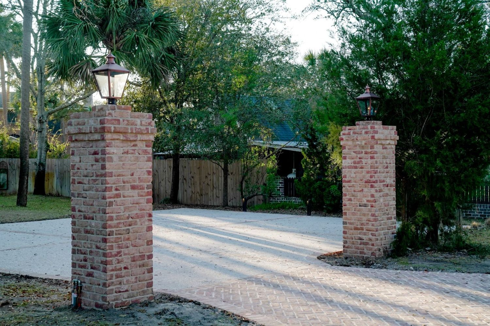
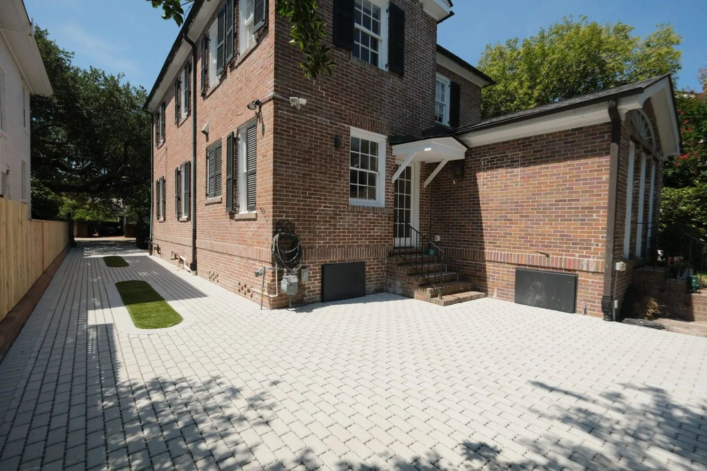
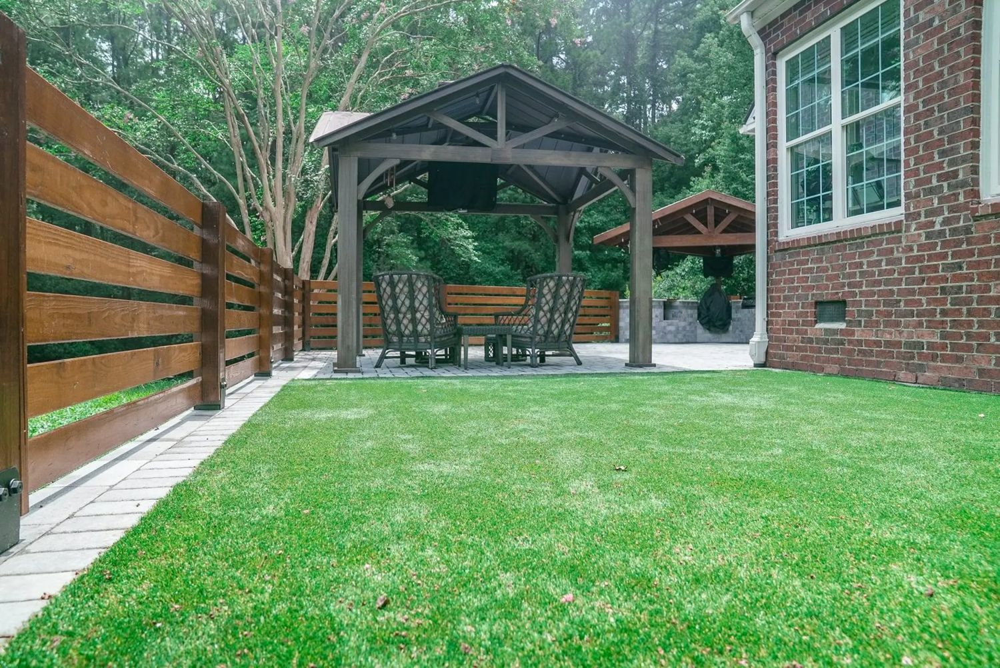
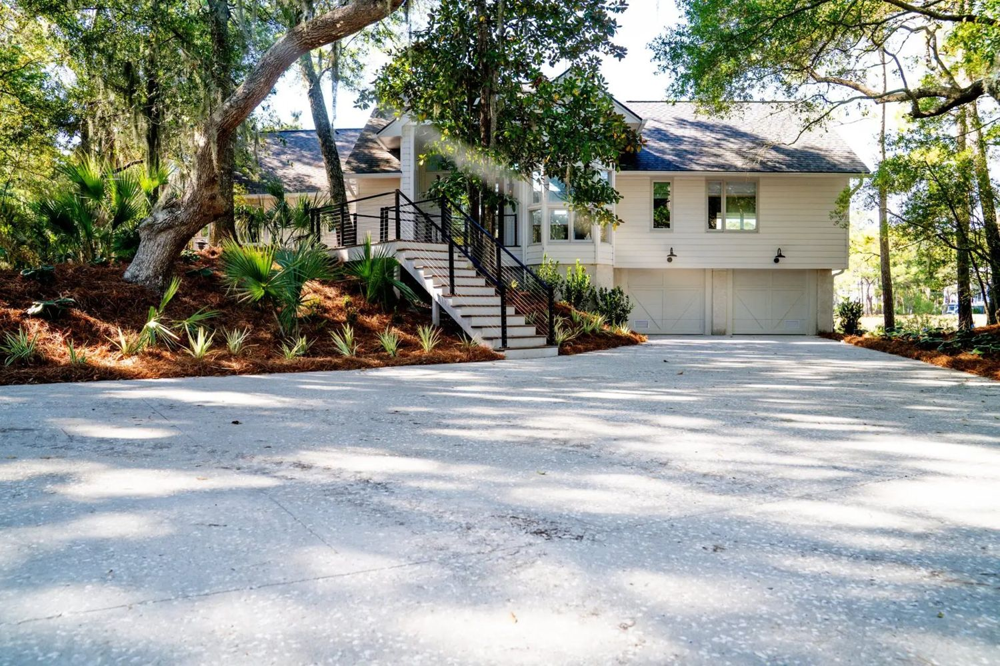
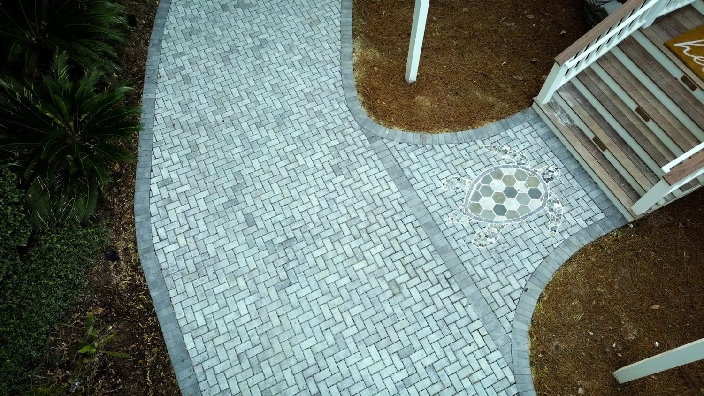

01 Consultation
We come to you.
Once your inquiry is in, we schedule an in-person estimate and walk the site together: how you use the space, where the water goes, and what you want to see from the kitchen window.
Hardscape design + buildCharleston, South Carolina
3 Creek designs and builds paver driveways, stone patios and outdoor rooms across the Lowcountry. Every project begins as a measured drawing, so you see your home's new ground before we break it.
01 Consultation
Once your inquiry is in, we schedule an in-person estimate and walk the site together: how you use the space, where the water goes, and what you want to see from the kitchen window.
02 Measured drawing
Photos and measurements become an engineered drawing of your project. You see the layout, the flow and the borders before a single shovel moves.
03 Materials + quote
Samples in hand wherever the manufacturer allows it. Then one clear quote that covers labor, material and delivery.
04 Build
You get a lead time up front and a production team that stays in touch until the last joint is swept.
Pattern lab
Pattern and colour change a driveway more than size does. Pick a pair and watch it get laid.
Herringbone in Charleston PearlAsk for a sample
Recent work







Materials

The workhorse. Manufactured for longevity and stronger than poured residential concrete, in more colours and shapes than you'd expect. Right for driveways, walks, patios and pool coping.
Moulded and kiln-fired for the classic Charleston brick look, in the reds, yellows and browns of the earth they come from. Beautiful, a little pricier, and they like some care.
Travertine, bluestone, flagstone and porcelain. The widest range of texture and finish, and the most tailored result.
Wider joints let rain pass straight through into a deep gravel base. Some Lowcountry municipalities require them, and on a wet lot they are simply the smart choice.
What you never see
If a driveway sinks, the problem was underneath. So we remove roots, grade and level the soil, and compact a gravel base before the first paver goes down. In the Lowcountry we plan for water on every job: trench drains, channel drains, French drains or dry wells, sized to how hard your lot floods.
We call 811 before we arrive, and we handle the questions your municipality will ask about permits.
“Within a few hours of our first phone call, Ryan was at my house with expert guidance and design support. I am already contracted with them for two more projects.”Kimbi Marenakos
“From initial response to creative layout and through the install, an absolute pleasure. They removed our damaged driveway and installed a paver drive that looks incredible for our Lowcountry home.”Basil Aldaghstani
“Ryan and the team installed a beautiful bluestone patio. They communicated timelines well and delivered a great product.”Geoff Dailey
Good questions
You can walk on it immediately. We recommend waiting about 12 hours before driving or parking, so the polymeric sand can settle and lock the pavers.
We strongly recommend against it. Pavers need a bed of heavily compacted soil and gravel, and that base is the most important part of the install. The trouble with an old driveway usually starts in the soil under it.
We sweep polymeric sand into the joints and vibrate it down. It locks the pavers in place and keeps weeds and moss out.
Yes. Ask us about the options when we meet.
Usually, depending on the manufacturer. Where a sample isn't available we source the closest match in colour and finish.